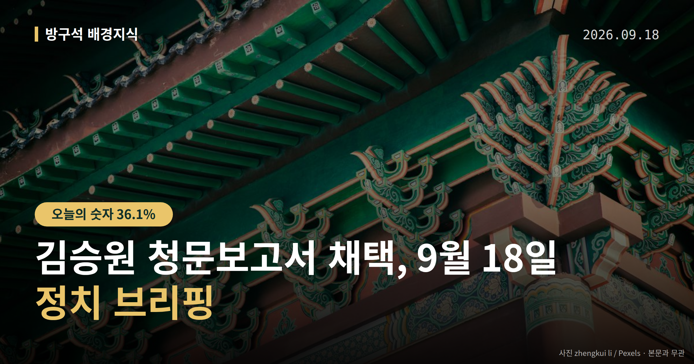
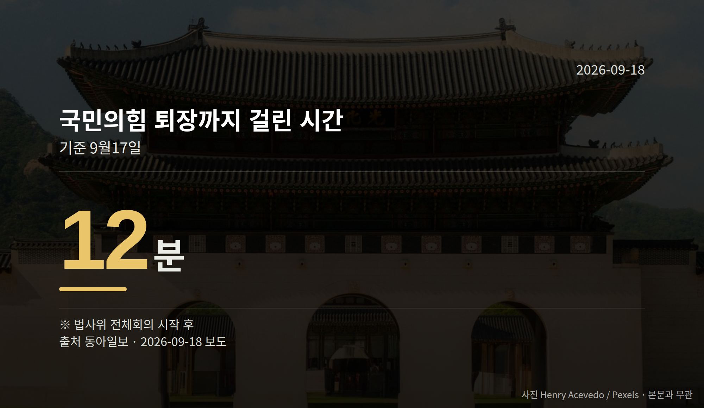
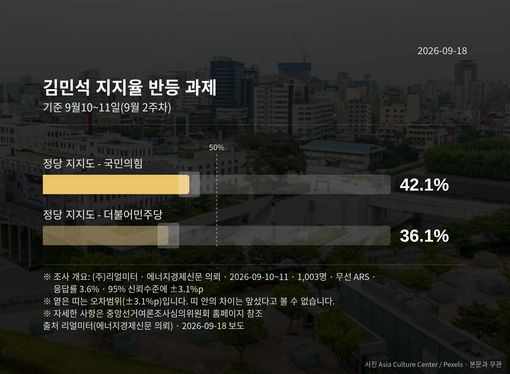

이 글은 2026년 9월 18일 기준으로 정리한 내용입니다.
김승원 청문보고서 채택이 17일 국회 법제사법위원회에서 이뤄졌습니다. 국민의힘 의원들이 퇴장한 가운데 더불어민주당 등 범여권 의원들이 단독으로 처리했습니다.
남은 절차는 대통령의 임명 여부 결정입니다. 오늘 지켜볼 지점도 바로 여기입니다.
인사청문경과보고서는 국회가 후보자 검증 결과를 정리해 대통령에게 보내는 문서입니다. 이 보고서가 채택되면 대통령은 임명을 진행할 절차적 요건을 갖추게 됩니다.
국민의힘은 코로나19 신약 임상시험 청탁 의혹 등을 이유로 지명 철회를 요구하며 회의 시작 12분 만에 회의장을 떠났습니다.
이 사안은 현재 '의혹'으로 제기된 단계입니다. 김 후보자 측의 구체적인 해명 내용은 자료에서 확인되지 않았습니다.
국민의힘 박형수 의원은 퇴장 전 "보고서 채택 안건 상정은 지금까지의 청문회 자체가 요식 행위였다는 것을 증명해 준다"고 말했습니다.
같은 당 곽규택 의원은 "내일 (대통령) 기자회견 하니까 오늘 (채택)하는 것 아니냐"고 항의했습니다. 이에 대한 민주당 측의 반박 발언은 자료에 담겨 있지 않습니다.
같은 날 국방위원회도 강신철 국방부 장관 후보자 청문 절차를 진행했습니다. 강 후보자를 두고는 철거민 특별분양, 아들의 '이모 찬스' 논란이 제기된 상태입니다.
| 항목 | 수치 |
|---|---|
| 국민의힘 퇴장까지 걸린 시간 | 12분 |
| 청문회 종료 후 보고서 채택까지 | 2일 |
(출처: 동아일보, 9월 17일 기준)

국민의힘은 임명이 강행될 경우 추가 대응을 예고했습니다. 자당 소속 의원이 위원장인 국토교통위원회와 산업통상자원중소벤처기업위원회 회의는 이미 취소됐습니다.
22일에는 국회 본관 앞 계단에서 '이재명 정부 실정 대국민 보고대회'를 열 계획입니다. 인사 검증, 부동산, 검찰 보완수사권 폐지 등을 다룰 예정이라고 합니다.
정점식 원내대표는 "현재 내각은 주요 인사의 전과 총합이 34범"이라며 "임명을 강행하면 35범 범죄 내각으로 강화될 것"이라고 말했습니다.
이 수치의 산출 근거와, 여당·후보자 측의 반박은 자료에 없습니다. 한편 국민의힘 내부에서도 투쟁 수위를 조절하자는 신중론이 나온다고 자료는 전하고 있습니다.

국회의원 발의 법률안 107건. 가장 최근은 진실·화해를 위한 진실규명결정사건 피해자 명예회복과 보상 등에 관한 법률안(이개호의원 등 10인).
본회의 처리 법률안 70건 — 원안가결 40건 · 수정가결 30건
이번 주 등록된 선거 여론조사 8건
열린국회정보·중앙선거여론조사심의위원회 자료를 직접 셌습니다. 여론조사의 자세한 사항은 중앙선거여론조사심의위원회 홈페이지를 참조하세요.
여러분은 인사청문회 결과를 볼 때 후보자의 어떤 부분을 가장 먼저 확인하시나요?
댓글로 알려 주시면 다음 글에 반영하겠습니다.